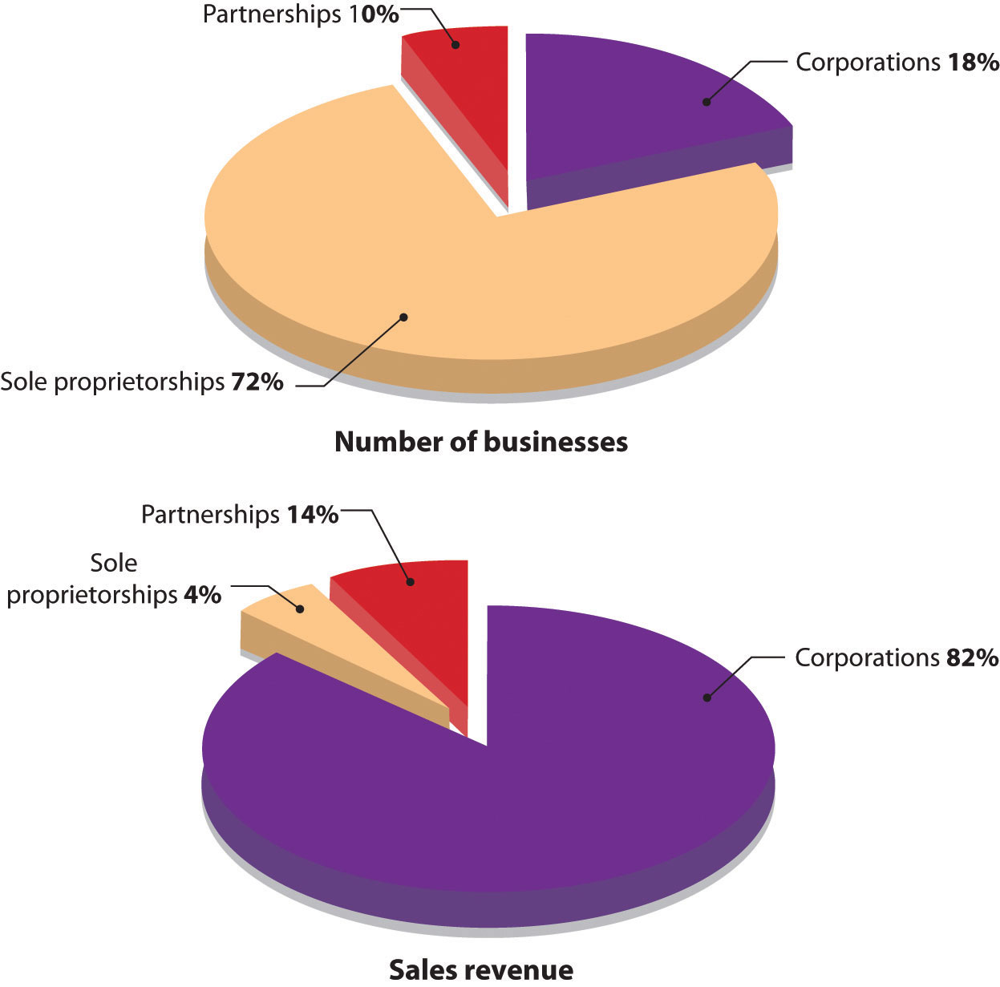

Who would have thought it? Two ex-hippies with strong interests in social activism would end up starting one of the best-known ice cream companies in the country—Ben & Jerry’s. Perhaps it was meant to be. It seems that Ben Cohen (the “Ben” of Ben & Jerry’s) always had a fascination with ice cream. As a child, he made his own ice cream mixtures by smashing his favorite cookies and candies into his ice cream. But it wasn’t until his senior year in high school that he became an official “ice cream man,” happily driving his truck through neighborhoods filled with kids eager to buy his ice cream pops. After high school, Ben tried college but it wasn’t for him. He attended Colgate University for a year and a half before he dropped out to return to his real love: being an ice cream man. He tried college again—this time at Skidmore, where he studied pottery and jewelry making—but, in spite of his selection of courses, still didn’t like it.
What’s your favorite Ben & Jerry’s flavor?
In the meantime, Jerry Greenfield (the “Jerry” of Ben & Jerry’s) was following a similar path. He majored in premed at Oberlin College and hoped to become a doctor. But he had to give up on this goal when he was not accepted into medical school. On a positive note, though, his college education steered him into a more lucrative field: the world of ice cream making. He got his first peek at the ice cream industry when he worked as a scooper in the student cafeteria at Oberlin. So, fourteen years after they met, Ben and Jerry reunited and decided to go into ice cream making big time. They moved to Burlington, Vermont—a college town in need of an ice cream parlor—and completed a $5 correspondence course from Penn State on making ice cream (they were practically broke at the time so they split the course). After getting an A in the course—not surprising, given that the tests were open book—they took the plunge: with their life savings of $8,000 (plus $4,000 of borrowed funds) they set up an ice cream scoop shop in a made-over gas station on a busy street corner in Burlington. The next big decision was which form of business ownership was best for them. This chapter introduces you to their options.
If you’re starting a new business, you have to decide which legal form of ownership is best for you and your business. Do you want to own the business yourself and operate as a sole proprietorship? Or, do you want to share ownership, operating as a partnership or a corporation? Before we discuss the pros and cons of these three types of ownership—sole proprietorship, partnership, and corporation—let’s address some of the questions that you’d probably ask yourself in choosing the appropriate legal form for your business.
No single form of ownership will give you everything you desire. You’ll have to make some trade-offs. Because each option has both advantages and disadvantages, your job is to decide which one offers the features that are most important to you. In the following sections we’ll compare the three ownership options (sole proprietorship, partnership, corporation) on the eight dimensions that we identified previously: setup costs and government regulations control, profit sharing, income taxes, skills, continuity and transferability, ability to obtain financing, and liability exposure.
Some of the questions that you’d probably ask yourself in choosing the appropriate legal form for your business include the following:
(AACSB) Analysis
Review the eight questions identified in this section that you’d probably ask yourself in choosing the appropriate legal form. Rate each of the questions using this scale: [1] not at all important; [2] not very important; [3] somewhat important; [4] very important; [5] extremely important. Select the two questions that are most important to you and the two questions that are least important to you, and explain your responses to these four questions.
A sole proprietorshipBusiness owned by only one person. is a business owned by only one person. The most common form of ownership, it accounts for about 72 percent of all U.S. businesses.“Number of Tax Returns, Receipts, and Net Income by Type of Business,” The 2012 Statistical Abstract: The National Data Book, January 30, 2011, http://www.census.gov/compendia/statab/cats/business_enterprise/sole_proprietorships_partnerships_corporations.html (accessed January 27, 2012). It’s the easiest and cheapest type of business to form: if you’re using your own name as the name of your business, you just need a license to get started, and once you’re in business, you’re subject to few government regulations.
As sole owner, you have complete control over your business. You make all important decisions, and you’re generally responsible for all day-to-day activities. In exchange for assuming all this responsibility, you get all the income earned by the business. Profits earned are taxed as personal income, so you don’t have to pay any special federal and state income taxes.
For many people, however, the sole proprietorship is not suitable. The flip side of enjoying complete control, for example, is having to supply all the different talents that may be necessary to make the business a success. And if you die, the business dissolves. You also have to rely on your own resources for financing: in effect, you are the business, and any money borrowed by the business is loaned to you personally. Even more important, the sole proprietor bears unlimited liabilityLegal condition under which an owner or investor is personally liable for all debts of a business. for any losses incurred by the business. As you can see from Figure 4.2 "Sole Proprietorship and Unlimited Liability", the principle of unlimited personal liability means that if the company incurs a debt or suffers a catastrophe (say, getting sued for causing an injury to someone), the owner is personally liable. As a sole proprietor, you put your personal assets (your bank account, your car, maybe even your home) at risk for the sake of your business. You can lessen your risk with insurance, yet your liability exposure can still be substantial. Given that Ben and Jerry decided to start their ice cream business together (and therefore the business was not owned by only one person), they could not set their company up as a sole proprietorship.
Figure 4.2 Sole Proprietorship and Unlimited Liability

Advantages of a sole proprietorship include the following:
Disadvantages of a sole proprietorship include the following:
(AACSB) Communication
Talk with a sole proprietor about his or her selected form of business ownership. Ask him or her which of the following dimensions (discussed in this section) were important in deciding to operate as a proprietor: setup costs and government regulations, control, profit sharing, income taxes, skills, continuity and transferability, ability to obtain financing, and liability exposure. Write a report detailing what you learned from the business owner.
A partnership (or general partnership)Business owned jointly by two or more people. is a business owned jointly by two or more people. About 10 percent of U.S. businesses are partnerships,“Number of Tax Returns, Receipts, and Net Income by Type of Business,” The 2012 Statistical Abstract: The National Data Book, January 30, 2011, http://www.census.gov/compendia/statab/cats/business_enterprise/sole_proprietorships_partnerships_corporations.html (accessed January 27, 2012). and though the vast majority are small, some are quite large. For example, the big four public accounting firms are partnerships. Setting up a partnership is more complex than setting up a sole proprietorship, but it’s still relatively easy and inexpensive. The cost varies according to size and complexity. It’s possible to form a simple partnership without the help of a lawyer or an accountant, though it’s usually a good idea to get professional advice. Professionals can help you identify and resolve issues that may later create disputes among partners.
The impact of disputes can be lessened if the partners have executed a well-planned partnership agreement that specifies everyone’s rights and responsibilities. The agreement might provide such details as the following:
Figure 4.3 "General Partnership and Unlimited Liability" shows that a major problem with partnerships, as with sole proprietorships, is unlimited liability: each partner is personally liable not only for his or her own actions but also for the actions of all the partners. In a partnership, it may work according to the following scenario. Say that you’re a partner in a dry cleaning business. One day, you return from lunch to find your establishment on fire. You’re intercepted by your partner, who tells you that the fire started because he fell asleep while smoking. As you watch your livelihood go up in flames, your partner tells you something else: because he forgot to pay the bill, your fire insurance was canceled. When it’s all over, you estimate the loss to the building and everything inside at $1.2 million. And here’s the really bad news: if the business doesn’t have the cash or other assets to cover losses, you can be personally sued for the amount owed. In other words, any party who suffered a loss because of the fire can go after your personal assets.
Figure 4.3 General Partnership and Unlimited Liability

Many people are understandably reluctant to enter into partnerships because of unlimited liability. Individuals with substantial assets, for example, have a lot to lose if they get sued for a partnership obligation (and when people sue, they tend to start with the richest partner). To overcome this defect of partnerships, the law permits a limited partnershipPartnership made up of a single general partner (who runs the business and is responsible for its liabilities) and any number of limited partners., which has two types of partners: a single general partner who runs the business and is responsible for its liabilities, and any number of limited partners who have limited involvement in the business and whose losses are limited to the amount of their investment.
The partnership has several advantages over the sole proprietorship. First, it brings together a diverse group of talented individuals who share responsibility for running the business. Second, it makes financing easier: The business can draw on the financial resources of a number of individuals. The partners not only contribute funds to the business but can also use personal resources to secure bank loans. Finally, continuity needn’t be an issue because partners can agree legally to allow the partnership to survive if one or more partners die.
Still, there are some negatives. First, as discussed earlier, partners are subject to unlimited liability. Second, being a partner means that you have to share decision making, and many people aren’t comfortable with that situation. Not surprisingly, partners often have differences of opinion on how to run a business, and disagreements can escalate to the point of actual conflict; in fact, they can even jeopardize the continuance of the business. Third, in addition to sharing ideas, partners also share profits. This arrangement can work as long as all partners feel that they’re being rewarded according to their efforts and accomplishments, but that isn’t always the case.
While the partnership form of ownership is viewed negatively by some, it was particularly appealing to Ben Cohen and Jerry Greenfield. Starting their ice cream business as a partnership was inexpensive and let them combine their limited financial resources and use their diverse skills and talents. As friends they trusted each other and welcomed shared decision making and profit sharing. They were also not reluctant to be held personally liable for each other’s actions.
A partnership has several advantages over a sole proprietorship:
A partnership has several disadvantages over a sole proprietorship:
(AACSB) Analysis
Grand Canyon Helicopter Adventures was started five years ago by Jayden Collins. The business has grown over the years, but is at a standstill now. Jayden would like to expand his business, but needs additional funds to do this. Also, he could really use help running the business. Though he is an excellent pilot with a perfect safety record, he’s not very good at handling the day-to-day details needed to keep the business running smoothly. A friend of his, Rob Tocci, approached him recently and asked to join him in the business. Rob is fairly wealthy and has considerable business experience. Plus, he knows how to fly choppers—though he has had a few (thankfully nonfatal) mishaps. Jayden is a little apprehensive about sharing responsibility for running the business, but he doesn’t mind sharing profits. On the other hand, he recognizes that he alone will not be able to grow the business.
Because Jayden doesn’t want to incorporate, he has only two options: continue doing business as a sole proprietorship or find someone to join him in a partnership. You should evaluate these two alternatives, discuss the advantages and disadvantages of each option, and recommend the one you consider most appropriate. If you recommend forming a partnership, distinguish between a limited and a general partnership.
A corporationLegal entity that is entirely separate from the parties who own it and that is responsible for its own debts. (sometimes called a regular or C-corporation) differs from a sole proprietorship and a partnership because it’s a legal entity that is entirely separate from the parties who own it. It can enter into binding contracts, buy and sell property, sue and be sued, be held responsible for its actions, and be taxed. As Figure 4.5 "Types of U.S. Businesses" shows, corporations account for 18 percent of all U.S. businesses but generate almost 82 percent of the revenues.“Number of Tax Returns, Receipts, and Net Income by Type of Business,” The 2012 Statistical Abstract: The National Data Book, January 30, 2011, http://www.census.gov/compendia/statab/cats/business_enterprise/sole_proprietorships_partnerships_corporations.html (accessed January 27, 2012). Most large well-known businesses are corporations, but so are many of the smaller firms with which you do business.
Figure 4.5 Types of U.S. Businesses
Source: "Number of Tax Returns, Receipts, and Net Income by Type of Business," The 2011 Statistical Abstract: The National Data Book, http://www.census.gov/compendia/statab/cats/business_enterprise/sole_proprietorships_partnerships_corporations.html (accessed August 27, 2011); "Number of Tax Returns and Business Receipts by Size of Receipts," The 2011 Statistical Abstract: The National Data Book, http://www.census.gov/compendia/statab/cats/business_enterprise/sole_proprietorships_partnerships_corporations.html (accessed August 27, 2011).
Corporations are owned by shareholdersOwners of a corporation. who invest money in the business by buying shares of stockShare of ownership in a corporation.. The portion of the corporation they own depends on the percentage of stock they hold. For example, if a corporation has issued 100 shares of stock, and you own 30 shares, you own 30 percent of the company. The shareholders elect a board of directorsGroup of people who are legally responsible for governing a corporation., a group of people (primarily from outside the corporation) who are legally responsible for governing the corporation. The board oversees the major policies and decisions made by the corporation, sets goals and holds management accountable for achieving them, and hires and evaluates the top executive, generally called the CEO (chief executive officer). The board also approves the distribution of income to shareholders in the form of cash payments called dividendsEarnings distributed to stockholders..
The corporate form of organization offers several advantages, including limited liability for shareholders, greater access to financial resources, specialized management, and continuity.
The most important benefit of incorporation is the limited liabilityLegal condition under which an owner or investor can’t lose more than the amount invested. to which shareholders are exposed: they are not responsible for the obligations of the corporation, and they can lose no more than the amount that they have personally invested in the company. Clearly, limited liability would have been a big plus for the unfortunate individual whose business partner burned down their dry cleaning establishment. Had they been incorporated, the corporation would have been liable for the debts incurred by the fire. If the corporation didn’t have enough money to pay the debt, the individual shareholders would not have been obligated to pay anything. True, they would have lost all the money that they’d invested in the business, but no more.
Incorporation also makes it possible for businesses to raise funds by selling stock. This is a big advantage as a company grows and needs more funds to operate and compete. Depending on its size and financial strength, the corporation also has an advantage over other forms of business in getting bank loans. An established corporation can borrow its own funds, but when a small business needs a loan, the bank usually requires that it be guaranteed by its owners.
Because of their size and ability to pay high sales commissions and benefits, corporations are generally able to attract more skilled and talented employees than are proprietorships and partnerships.
Another advantage of incorporation is continuity. Because the corporation has a legal life separate from the lives of its owners, it can (at least in theory) exist forever. Transferring ownership of a corporation is easy: shareholders simply sell their stock to others. Some founders, however, want to restrict the transferability of their stock and so choose to operate as a privately-held corporationCorporation that restricts the transferability of its stock.. The stock in these corporations is held by only a few individuals, who are not allowed to sell it to the general public. Companies with no such restrictions on stock sales are called public corporationsCorporation whose stock is available to the general public.; stock is available for sale to the general public.
Like sole proprietorships and partnerships, corporations have both positive and negative properties. In sole proprietorships and partnerships, for instance, the individuals who own and manage a business are the same people. Corporate managers, however, don’t necessarily own stock, and shareholders don’t necessarily work for the company. This situation can be troublesome if the goals of the two groups differ significantly. Managers, for example, might be more interested in career advancement than the overall profitability of the company. Stockholders might care about profits without regard for the well-being of employees.
Another drawback to incorporation—one that often discourages small businesses from incorporating—is the fact that corporations are costly to set up. When you combine filing and licensing fees with accounting and attorney fees, incorporating a business could set you back by $1,000 to $6,000 or more depending on the size and scope of your business.“How Much Does It Cost to Incorporate?” San Francisco Chronicle, http://allbusiness.sfgate.com/legal/contracts-agreements-incorporation/2531-1.html (accessed August 27, 2011). Additionally, corporations are subject to levels of regulation and governmental oversight that can place a burden on small businesses. Finally, corporations are subject to what’s generally called “double taxation.” Corporations are taxed by the federal and state governments on their earnings. When these earnings are distributed as dividends, the shareholders pay taxes on these dividends. Corporate profits are thus taxed twice—the corporation pays the taxes the first time and the shareholders pay the taxes the second time.
Five years after starting their ice cream business, Ben Cohen and Jerry Greenfield evaluated the pros and cons of the corporate form of ownership, and the “pros” won. The primary motivator was the need to raise funds to build a $2 million manufacturing facility. Not only did Ben and Jerry decide to switch from a partnership to a corporation, but they also decided to sell shares of stock to the public (and thus become a public corporation). Their sale of stock to the public was a bit unusual: Ben and Jerry wanted the community to own the company, so instead of offering the stock to anyone interested in buying a share, they offered stock to residents of Vermont only. Ben believed that “business has a responsibility to give back to the community from which it draws its support.”Fred Chico Lager, Ben & Jerry’s: The Inside Scoop (New York: Crown Publishers, 1994), 91. He wanted the company to be owned by those who lined up in the gas station to buy cones. The stock was so popular that one in every hundred Vermont families bought stock in the company.Fred Chico Lager, Ben & Jerry’s: The Inside Scoop (New York: Crown Publishers, 1994), 103. Eventually, as the company continued to expand, the stock was sold on a national level.
A corporation has several advantages over a sole proprietorship and partnership:
A corporation has several disadvantages over a sole proprietorship and partnership:
(AACSB) Analysis
SolarBike Company was formed as a partnership ten years ago by three sisters-in-law: Peg McLaughlin, Terry McLaughlin, and Joanie McLaughlin. All three worked diligently to design and produce the SolarBike: an electric bicycle propelled by the sun’s rays. The good news is that the bike is a big hit with environmentalists and last year’s sales reached $2 million. The bad news is that to keep up with growing demand for the bike, the company must expand its capacity at a cost of $1 million. Even though the company is doing well, it’s unlikely that the partnership could get the needed $1 million in funds from a bank.
The company’s predicament was discussed at a recent partnership meeting. Not only were the three partners unwilling to lend the company any more money, but also they voiced concern about being held responsible for their own actions as well as for all the partners’ actions. Peg asked the group to consider incorporating and raising funds through the sale of stock. Joanie supported this idea, but Terry was against it.
The three partners hired you as a consultant to advise them on whether to remain as a partnership or to form a private corporation. In addition to your recommendation, you should discuss the advantages and disadvantages of both forms of organization and explain how they apply to SolarBike Company’s situation.
In addition to the three commonly adopted forms of business organization—sole proprietorship, partnership, and regular corporations—some business owners select other forms of organization to meet their particular needs. We’ll look at several of these options:
To understand the value of S-corporations and limited-liability companies, we’ll begin by reviewing the major advantages and disadvantages of the three types of business ownership we’ve explored so far: sole proprietorship, partnership, and corporation. Identifying the attractive and unattractive features of these three types of business ownership will help us appreciate why S-corporations and limited-liability companies were created.
What feature of corporations do business owners find most attractive? The most attractive feature of a corporation is limited liability, which means that the shareholders (owners) cannot be held personally liable for the debts and obligations of the corporation. For example, if a corporation cannot pay its debts and goes bankrupt, the shareholders will not be required to pay the creditors with their own money. Shareholders cannot lose any more than the amount they have invested in the company.
What feature of corporations do business owners find least attractive? Most would agree that the least attractive feature of a corporation is “double taxation.” Double taxation occurs when the same earnings are taxed twice by the government. Let’s use a simple example to show how this happens. You’re the only shareholder in a very small corporation. This past year it earned $10,000. It had to pay the government $3,000 corporate tax on the $10,000 earned. The remaining $7,000 was paid to you by the corporation in the form of a dividend. When you filed your personal income tax form, you had to pay personal taxes on the $7,000 dividend. So the $7,000 was taxed twice: the corporation paid the taxes the first time and you (the shareholder) paid the taxes the second time.
Now let’s turn to the other two types of business ownership: sole proprietorship and partnership. What feature of these forms of business organization do owners find most attractive? The most attractive feature is that there is no “double taxation” with proprietorships and partnerships. Proprietorships and partnerships do not pay taxes on profits at the business level. The only taxes paid are at the personal level—this occurs when proprietors and partners pay taxes on their share of their company’s income. Here are two examples (one for a sole proprietorship and one for a partnership). First, let’s say you’re a sole proprietor and your business earns $20,000 this year. The sole proprietorship pays no taxes at the “business” level. You pay taxes on the $20,000 earnings on your personal tax return. Second, let’s say you’re a partner in a three-partner firm (in which each partner receives one-third of the partnership income). The firm earns $90,000 this year. It pays no taxes at the partnership level. Each partner, including you, pays taxes on one-third of the earnings, or $30,000 each. Notice that in both cases, there is no “double taxation.” Taxes were paid on the company earnings only once—at the personal level. So the total tax burden is less with sole proprietorships and partnerships than it is with corporations.
What feature of sole proprietorships and partnerships do business owners find least attractive? And the answer is…unlimited liability. This feature holds a business owner personally liable for all debts of his or her company. If you’re a sole proprietorship and the debts of your business exceed its assets, creditors can seize your personal assets to cover the proprietorship’s outstanding business debt. For example, if your business is sued for $500,000 and it does not have enough money to cover its legal obligation, the injured party can seize your personal assets (cash, property, etc.) to cover the outstanding debt. Unlimited liability is even riskier in the case of a partnership. Each partner is personally liable not only for his or her own actions but also for the actions of all the partners. If, through mismanagement by one of your partners, the partnership is forced into bankruptcy, the creditors can go after you for all outstanding debts of the partnership.
How would you like a legal form of organization that provides the attractive features of the three common forms of organization (corporation, sole proprietorship and partnership) and avoids the unattractive features of these three organization forms? It sounds very appealing. This is what was accomplished with the creation of two hybrid forms of organization: S-corporationCorporation that gives small business owners limited liability protection, but taxes company profits only once, when they are paid out as dividends. and limited-liability companyCorporation whose members are not personally liable for company debts and whose earnings are taxed only once, when they are paid out as dividends. It has fewer rules and restrictions than does an S-corporation.. These hybrid organization forms provide business owners with limited liability (the attractive feature of corporations) and no “double taxation” (the attractive feature of sole proprietorships and partnerships). They avoid double taxation (the unattractive feature of corporations) and unlimited liability (the unattractive feature of sole proprietorships and partnerships). We’ll now look at these two hybrids in more detail.
In 1970, Karen and Mike Tocci, avid go-kart racing fans, bought a parcel of land in New Hampshire so their son, Rob, and his son’s friends could drag race in a safe environment. The Tocci’s continued interest in racing resulted in their starting a family-run business called Shannon Dragway. Over time, the business expanded to include a speedway track and a go-kart track and was renamed New Hampshire Motorsports Complex. In selecting their organization form, the Tocci’s wanted to accomplish two main goals: (1) limit their personal liability; and (2) avoid having their earnings taxed twice, first at the corporate level and again at the personal level. An S-corporation form of business achieved these goals. They found they were able to meet the following S-corporation eligibility criteria:
Deciding to operate as an S-corporation presented the Tocci’s with some disadvantages: They had no flexibility in the way profits were divided among the owners. In an S-corporation, profits must be allocated based on percentage ownership. So if an owner/shareholder holds 25 percent of the stock in the S-corporation, 25 percent of the company profits are allocated to this shareholder regardless of the amount of effort he or she exerts in running the business. Additionally, the owners had to follow a number of formal procedures, such as electing a board of directors and holding annual meetings. Finally, they were subjected to heavy recordkeeping requirements. Despite these disadvantages, the Tocci’s concluded that on balance the S-corporation was the best form of organization for their business.
In 1977, Wyoming was the first state to allow businesses to operate as limited-liability companies. Twenty years later, in 1997, Hawaii was the last state to give its approval to the new organization form. Since then, the limited-liability company has increased in popularity. Its rapid growth was fueled in part by changes in state statutes that permit a limited-liability company to have just one member. The trend to LLCs can be witnessed by reading company names on the side of trucks or on storefronts in your city. It is common to see names such as Jim Evans Tree Care, LLC, and For-Cats-Only Veterinary Clinic, LLC. But LLCs are not limited to small businesses. Companies such as Crayola, Domino’s Pizza, Ritz-Carlton Hotel Company, and iSold It (which helps people sell their unwanted belongings on eBay) are operating under the limited-liability form of organization.
In many ways, a limited-liability company looks a lot like an S-corporation. Its owners (called members rather than shareholders) are not personally liable for debts of the company, and its earnings are taxed only once, at the personal level (thereby eliminating double taxation). But there are important differences between the two forms of organizations. For example, an LLC:
As the approach used to allocate profits is very important (item 3 described previously), let’s spend a few minutes going over an example of how the profit allocation process works. Let’s say that you and a business partner started a small pet grooming business at the beginning of the year. Your business partner (who has more money than you do) contributed $40,000 to start-up the business and you contributed $10,000 (so your partner’s percentage ownership in the business is 80 percent and yours is 20 percent). But your business partner has another job and so you did 90 percent of the work during the past year. Profit for the first year was $100,000. If your company was set up as a S-corporation, you would be required to allocate profits based on percentage ownership. Under this allocation scheme $80,000 of the profits would be allocated to your business partner and only $20,000 would be allocated to you. This hardly seems fair. Under the limited-liability form of organization you and your partner can decide what is a “fair” allocation of profits and split the profits accordingly. Perhaps you will decide that you should get 70 percent of the profits (or $70,000) and your business partner should get 30 percent (or $30,000).
Now, let’s look at the fourth item—ease of operation. It is true that S-corporations have to deal with more red tape and paperwork and abide by more rules (such as holding annual meetings) than do limited-liability companies. Plus they are more complex to set up. But this does not mean that setting up and operating a limited-liability company is a breeze and should be taken lightly. One essential task that should be carefully attended to is the preparation of an operating agreement. This document, which is completed when the company is formed (and can be revised later), is essential to the success of the business. It describes the rights and responsibilities of the LLC members and spells out how profits or losses will be allocated.
We have touted the benefits of limited liability protection for an LLC (as well as for regular corporations and S-corporations). We now need to point out some circumstances under which an LLC member (or shareholder in a corporation) might be held personally liable for the debts of his or her company. A business owner can be held personally liable if he or she:
As personal loan guarantees are the most common circumstance under which an LLC member is held personally liability for the debts of his or her company, let’s explore this topic some more by asking (and answering) two questions:
A final note about hybrid forms of organization. In this section, we have looked at two organization forms that offer business owners limited liability and tax benefits. There are others not covered here such as Professional Limited-Liability Companies (PLLCs), which are set up by doctors, lawyers, accountants, and so on who provide professional services. And it is evident that the variations of organization forms available to businesses will continue to expand in the future.
A cooperativeA business owned and controlled by those who use its services. (also known as a co-op) is a business owned and controlled by those who use its services. Individuals and firms who belong to the cooperative join together to market products, purchase supplies, and provide services for its members. If run correctly, cooperatives increase profits for its producer-members and lower costs for its consumer-members. Cooperatives are common in the agricultural community. For example, some 750 cranberry and grapefruit member growers market their cranberry sauce, fruit juices, and dried cranberries through the Ocean Spray Cooperative.Ocean Spray History (company Web site, about us, history), http://www.oceanspray.com/about/cranberry_history.aspx (accessed June 19, 2008). More than three hundred thousand farmers obtain products they need for production—feed, seed, fertilizer, farm supplies, fuel—through the Southern States Cooperative.Corporate information, Southern States Cooperative, http://www.southernstates.com/sscinfo/about (accessed June 19, 2008). Co-ops also exist outside agriculture. For example, REI (Recreational Equipment Incorporated), which sells quality outdoor gear, is the largest consumer cooperative in the United States with more than three million active members. The company shares its financial success each year with its members, who get a refund each year based on their eligible purchases.2006 REI Stewardship Report, http://www.rei.com/aboutrei/csr/2006/coop.html (accessed June 19, 2008).
A not-for-profit corporationAn organization formed to serve some public purpose rather than for financial gain. (sometimes called a nonprofit) is an organization formed to serve some public purpose rather than for financial gain. As long as the organization’s activity is for charitable, religious, educational, scientific, or literary purposes, it should be exempt from paying income taxes. Additionally, individuals and other organizations that contribute to the not-for-profit corporation can take a tax deduction for those contributions. The types of groups that normally apply for nonprofit status vary widely and include churches, synagogues, mosques, and other places of worship; museums; schools; and conservation groups.
There are more than 1.5 million not-for-profit organizations in the United States.“Number of Nonprofit Organizations in the United States, 1999–2009,” Urban Institute, National Center for Charitable Statistics, http://nccsdataweb.urban.org/PubApps/profile1.php?state=US (accessed August 27, 2011). Some are extremely well funded, such as the Bill and Melinda Gates Foundation, which has an endowment of approximately $38 billion and has given away $25.36 billion since its inception.“Foundation Fact Sheet,” The Bill and Melinda Gates Foundation, June 30, 2011, http://www.gatesfoundation.org/about/Pages/foundation-fact-sheet.aspx (accessed August 27, 2011). Others are nationally recognized, such as United Way, Goodwill Industries, Habitat for Humanity, and the Red Cross. Yet the vast majority is neither rich nor famous, but nevertheless makes significant contributions to society.
(AACSB) Analysis
Create a table comparing a regular corporation, an S-corporation, and a limited-liability company on these dimensions: limited-liability protection, double taxation, restrictions on number of stockholders or members, rules, and restrictions. If you and several of your friends owned an ice skating rink, which form of ownership would you select? Why? Which form of ownership would you select for Google?
The headline read, “Wanted: More than 2,000 in Google Hiring Spree.”Alexei Oreskovic, “Wanted: More than 2,000 in Google Hiring Spree,” Reuters, November 19, 2010, http://www.reuters.com/article/2010/11/19/us-google-idUSTRE6AI05820101119 (accessed August 28, 2011); “Help Wanted: Google Hiring in 2011,” The Official Google Blog, January 25, 2011, http://googleblog.blogspot.com/2011/01/help-wanted-google-hiring-in-2011.html (accessed August 28, 2011). The largest Web search engine in the world was disclosing its plans to grow internally and increase its workforce by more than 2,000 people, with half of the hires coming from the United States and the other half coming from other countries. The added employees will help the company expand into new markets and battle for global talent in the competitive Internet information providers industry. When properly executed, internal growth benefits the firm.
An alternative approach to growth is to merge with or acquire another company. The rationale behind growth through merger or acquisition is that 1 + 1 = 3: the combined company is more valuable than the sum of the two separate companies. This rationale is attractive to companies facing competitive pressures. To grab a bigger share of the market and improve profitability, companies will want to become more cost efficient by combining with other companies.
Though they are often used as if they’re synonymous, the terms merger and acquisition mean slightly different things. A mergerThe combination of two companies to form a new company. occurs when two companies combine to form a new company. An acquisitionThe purchase of one company by another with no new company being formed. is the purchase of one company by another with no new company being formed. An example of a merger is the merging in 2010 of United Airlines and Continental Airlines. The combined company, the largest carrier in the world, flies under the name United Airlines, but its planes display the Continental Airlines logo. The merger will combine the scale of United Airlines with the management culture of Continental. Another example of a fairly recent acquisition is the purchase of Reebok by Adidas for $3.8 billion.Theresa Howard, “Adidas, Reebok lace up for run at Nike,” US Today, August 3, 2005, http://www.usatoday.com/money/industries/manufacturing/2005-08-02-adidas-usat_x.htm (accessed June 20, 2008). The deal was expected to give Adidas a stronger presence in North America and help the company compete with rival Nike. Though Adidas still sells shoes under the Reebok brand, Reebok as a company no longer exists.
Companies are motivated to merge or acquire other companies for a number of reasons, including the following.
Acquiring complementary products was the motivation behind Adidas’s acquisition of Reebok. As Adidas CEO Herbert Hainer stated in a conference call, “This is a once-in-a-lifetime opportunity. This is a perfect fit for both companies, because the companies are so complementary….Adidas is grounded in sports performance with such products as a motorized running shoe and endorsement deals with such superstars as British soccer player David Beckham. Meanwhile, Reebok plays heavily to the melding of sports and entertainment with endorsement deals and products by Nelly, Jay-Z, and 50 Cent. The combination could be deadly to Nike.”Theresa Howard, “Adidas, Reebok lace up for run at Nike,” US Today, August 3, 2005, http://www.usatoday.com/money/industries/manufacturing/2005-08-02-adidas-usat_x.htm (accessed June 20, 2008).
Gaining new markets was a significant factor in the 2005 merger of US Airways and America West. US Airways is a major player on the East Coast, the Caribbean and Europe, while America West is strong in the West. The expectations were that combining the two carriers would create an airline that could reach more markets than either carrier could do on its own.“America West, US Air in Merger Deal,” CNNMoney.com, May 20, 2005, http://money.cnn.com/2005/05/19/news/midcaps/airlines/index.htm (accessed June 20, 2008).
The purchase of Pharmacia Corporation (a Swedish pharmaceutical company) by Pfizer (a research-based pharmaceutical company based in the United States) in 2003 created the world’s largest drug maker and the leading pharmaceutical company, by revenue, in every major market around the globe. The acquisition created an industry giant with more than $48 billion in revenue and a research-and-development budget of more than $7 billion.Robert Frank and Scott Hensley, “Pfizer to Buy Pharmacia For $60 Billion in Stock,” Wall Street Journal Online, WJS.com, July 15, 2002, http://www.chelationtherapyonline.com/technical/p39.htm (accessed June 20, 2008). Each day, almost forty million people around the glove are treated with Pfizer medicines.About Pfizer, company Web site: Pfizer.com, http://www.pfizer.com/about/history/pfizer_pharmacia.jsp (accessed August 28, 2011). Its subsequent $68 billion purchase of rival drug maker Wyeth further increased its presence in the pharaceutical market.“Pfizer Agrees to Pay $68 Billion for Rival Drug Maker Wyeth,” New York Times, January 25, 2009, http://www.nytimes.com/2009/01/26/business/26drug.html?pagewanted=2 (accessed August 28, 2011).
What happens, though, if one company wants to acquire another company, but that company doesn’t want to be acquired? You can end up with a very unfriendly situation. The outcome could be a hostile takeover—an act of assuming control that’s resisted by the targeted company’s management and its board of directors. Ben Cohen and Jerry Greenfield found themselves in one of these unfriendly situations: Unilever—a very large Dutch/British company that owns three ice cream brands—wanted to buy Ben & Jerry’s, against the founders’ wishes. To make matters worse, most of the Ben & Jerry’s stockholders sided with Unilever. They had little confidence in the ability of Ben Cohen and Jerry Greenfield to continue managing the company and were frustrated with the firm’s social-mission focus. The stockholders liked Unilever’s offer to buy their Ben & Jerry’s stock at almost twice its current market price and wanted to take their profits and run. In the end, Unilever won; Ben & Jerry’s was acquired by Unilever in a hostile takeover. Despite fears that the company’s social mission would end, this didn’t happen. Though neither Ben Cohen nor Jerry Greenfield are involved in the current management of the company, they have returned to their social activism roots and are heavily involved in numerous social initiatives sponsored by the company.
(AACSB) Analysis
Go online and research the merger of XM and Sirius. Why did the two satellite radio stations merge? Should this merger have been approved by the Federal Communications Commission? Whom does the merger help? Whom does it hurt? If you were the decision maker, would you approve the merger? Why, or why not?
Do you have an idea for a charitable organization you’d like to start? Think of some cause that’s important to you. Then go online and review this article by Joanne Fritz, “How to Incorporate as a Nonprofit: A Check List” located at http://nonprofit.about.com/od/nonprofitbasics/ht/startingsteps.htm. Draft a mission statement for your not-for-profit organization, and indicate the types of people you’d ask to serve on your board of directors. Then list the steps you’d take to set up your not-for-profit organization.
Where Do You Find Happiness?
Have you given much thought to whether you’d be happier working for a small company or for a big one? Here’s your chance to compare and contrast the opportunities that small companies and big companies offer. First, read the article “Company Research—Investigate Small Companies” (http://jobsearch.about.com/cs/employerresearch/a/compresearch.htm). Then read the article “Benefits of Working in a Small Company vs. a Corporation” (http://www.streetdirectory.com/travel_guide/190820/careers_and_job_hunting/benefits_of _working_in_a_small_company_vs_a_corporation.html).Alison Doyle, “Company Research—Investigate Small Companies,” About.com: Job Searching, http://jobsearch.about.com/cs/employerresearch/a/compresearch.htm (accessed August 28, 2011); Tony Jacowsk, “Benefits of Working in a Small Company vs. a Corporation,” Business Resources, http://www.streetdirectory.com/travel_guide/190820/careers_and_job_hunting/benefits_of_working_in_a_small_company_vs_a_corporation.html (accessed August 28, 2011). Identify five advantages of working for a small company and five advantages of working for a big one. Indicate your choice of employer (small or big company), and explain why you selected this option.
Bermuda Is Beautiful, but Should You Incorporate There?
A company can incorporate in any state it chooses. Most small businesses incorporate in the state in which they do business, while larger companies typically hunt around for the state or country that gives them the most favorable treatment (lower taxes, fewer restrictions). A growing number of U.S. companies are incorporating in Bermuda to lower their corporate income taxes while still enjoying the benefits of doing business in the United States. Does this seem right to you? Read these two articles and answer the questions that follow:
Questions:
Legally Speaking
Here’s the scenario: You and your team serve as consultants to business owners who need help in deciding which legal form of ownership is best for them. You’re currently working with three clients. For each client, you’ll evaluate possible legal forms of organization, debate the alternatives, and make a recommendation. Then, you’ll write a report to your client, presenting your recommendation and explaining why you arrived at your conclusion.
In addition to learning the basic facts about each company, you’ve gathered additional information by asking each client the following questions:
The following is the information that you’ve collected about each client, along with ownership options you should consider.
Client 1: Rainforest Adventures
Rainforest Adventures offers one-day and multiday tours of several locations in Australia. It works both with tourists and with study groups, and its clientele varies from people who want a relaxing experience away from hectic urban life to those who are keenly interested in the exotic environment. The business is dedicated to the preservation of Australia’s tropical and wetland preserves. Its guides have many years of experience leading tourists through the rainforests, particularly at night when they come alive.
Rainforest Adventures was started three years ago by Courtney Kennedy, who has fifteen years of experience in the ecotourism industry. She runs the business as a sole proprietorship but is considering a partnership. (She doesn’t want the cost or hassle of doing business as a corporation.) In questioning her, you found out the following: Kennedy is dedicated to preserving the Australian wetlands and sees her business as a way of encouraging people to support conservation efforts. However, her guides have displayed an “it’s just-a-job” attitude, have become increasingly undependable, and are unwilling to share her commitment. Still, Kennedy has several trusted friends who not only have years of experience as guides, but who also share her enthusiasm for environmental preservation. She’s optimistic that they’d be willing to join her in the business. She dreams of expanding her business to offer classes on the ecology of the rainforest but doesn’t have enough cash, and she’s afraid that a loan application will be turned down by the bank.
Options
Because Kennedy doesn’t want to incorporate, she’s left with two options: to continue doing business as a sole proprietorship or to find one or more individuals to join her in a partnership. After evaluating these two alternatives, you should recommend the one that you consider most appropriate. You should discuss the pros and cons of both options and explain how each applies to Kennedy’s situation. If you recommend forming a partnership, you need to distinguish between a general partnership and a limited partnership, as well as explain what a partnership agreement is, what it covers, and why it’s important.
Client 2: Scuffy the Tugboat
Scuffy the Tugboat is a family-run business that makes tugboats. It was formed as a partnership in 1996 by the three McLaughlin brothers—Mick (a naval architect), Jack (an accountant), and Bob (a marine engineer). Their first tugboat is still towing ships in Boston harbor, and over the years, success has allowed them to grow the company by plowing money back into it. Last year’s sales were more than $7 million. Now, however, they want to double production by expanding their factory by five thousand square feet. They estimate a cost of about $1 million, yet a bigger facility would enable them to avoid late-delivery penalties that can run up to $2,000 a day. They’re not sure, however, about the best way to raise the needed funds. None of the brothers has $1 million on hand, and because lenders are often hesitant to loan money to shipbuilders, even those with good performance records, local banks haven’t been encouraging.
Unlike many partners, the three brothers get along quite well. They’re concerned, though, about the risks of taking on personal debts for the business. In particular, they don’t like being liable not only for their own actions, but also for the actions of all the partners.
Options
You should recommend that Scuffy the Tugboat either remain a partnership or become a privately-held corporation. State the pros and cons of both forms of organization, and explain how they apply to the brothers’ situation.
Client 3: Dinner Rendezvous
For three years, owner Peggy Deardon has been operating Dinner Rendezvous, which gives individuals an opportunity to meet others and expand their social networks, in Austin, Texas. Interested clients go to the company’s Web site and fill out applications and privacy statements. There’s an annual membership fee of $125 and a $15 charge for each dinner attended (plus the cost of dinner and drinks). Deardon sets up all dinners and is onsite at the restaurant to introduce guests and serve complimentary champagne. While the company has a steady clientele, it’s not a big moneymaker. If Deardon didn’t have a regular full-time job, she couldn’t keep the business running. She stays with it because she enjoys it and believes that she provides a good service for Austin residents. Because it’s run out of her home, and because her biggest cost is the champagne, it’s a low-risk business with no debts. With a full-time job, she also appreciates the fact that it requires only a few hours of her time each week.
Options
Since your client wants advice on whether to incorporate, you should evaluate two options—remaining a sole proprietorship or forming a corporation. In addition to your recommendation, you should state the pros and cons of both forms of organization and explain how they apply to Deardon’s situation.
America for Sale
Our U.S. companies continue to expand by merging with or acquiring other companies. This is acceptable business practice. But what happens when our U.S. companies and other assets are bought up by firms and individuals outside the United States? Is this acceptable business practice or something we should be concerned about? Learn how this is happening by reading this article by Geoff Colvin:
Questions:


{kind=link}